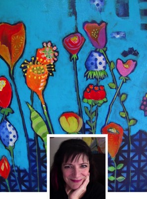

Menu
Irreverent Mind
FREE SESSION
PATREON!
GROUPS
WRITINGS
Mind-Tickler Blog
Transform Suffering
Magazine Article by Judy
JUDY'S STORY
CLASSES
Live What You Know Series
Live What You Know Class
UnDo Procrastination
Depression & Anxiety Class
Caring What People Think
Fear and Anxiety
Overcome Overeating
Overcome Overeating Private
The Hope in Hopelessness
Undoing Shame & Guilt
CONTACT
Links and Resources
Check out Judy on Patreon!
click here

Become a Patron
The Mind-Tickler
Small Groups with Judy
Free Session